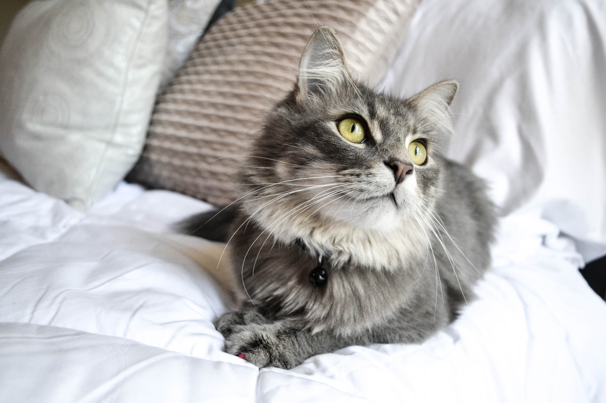
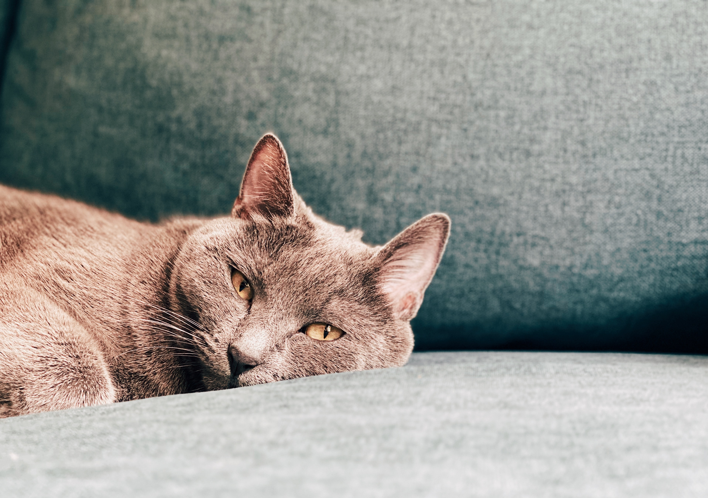
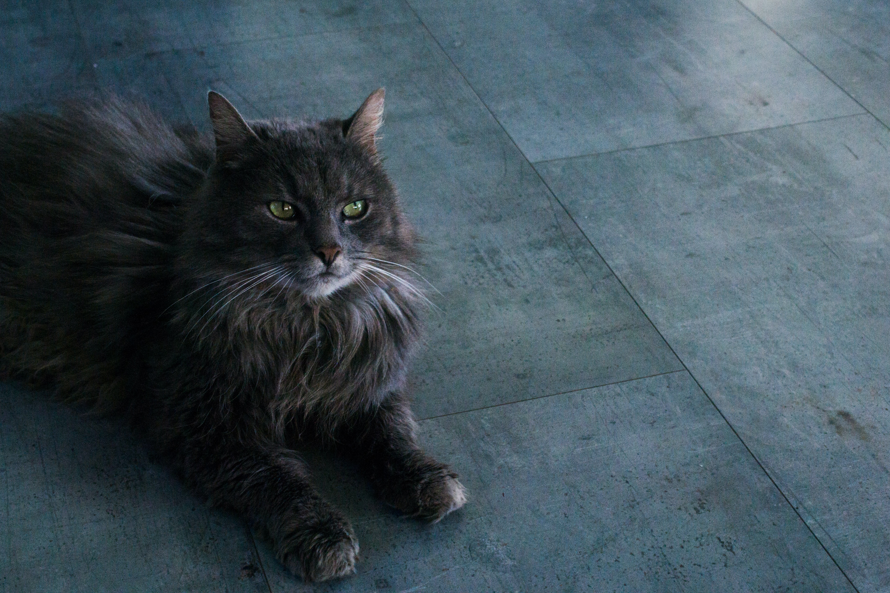
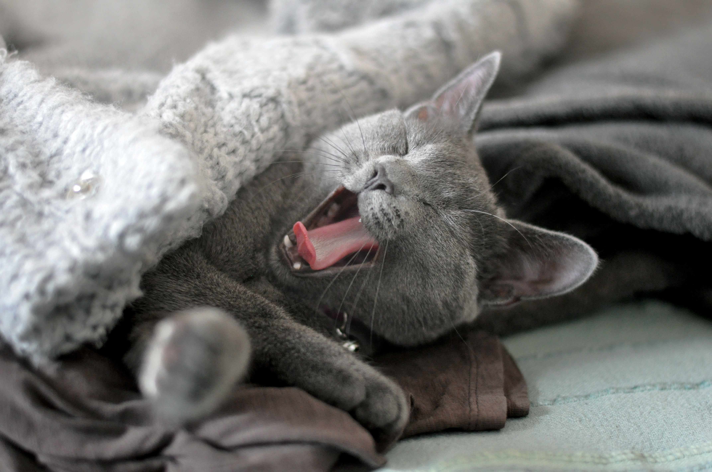
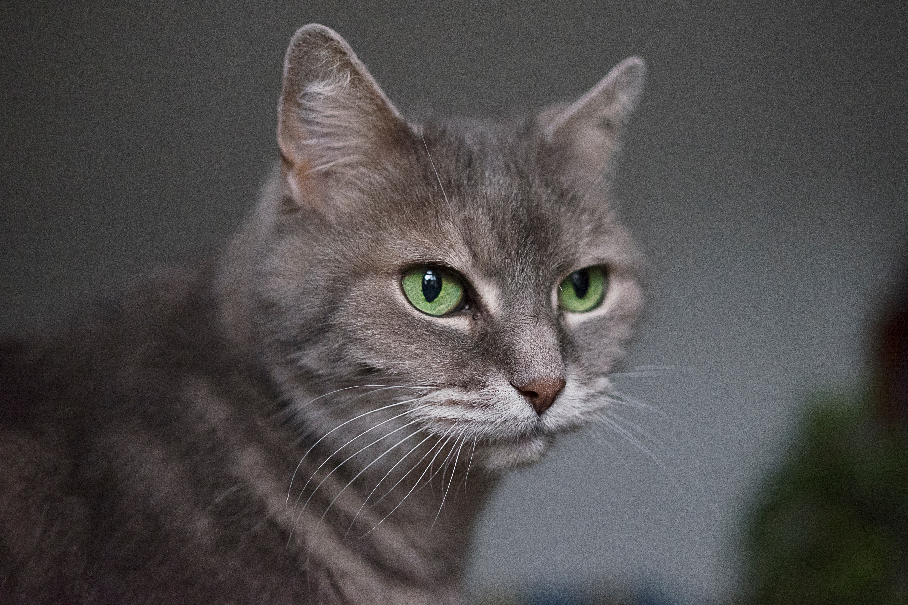
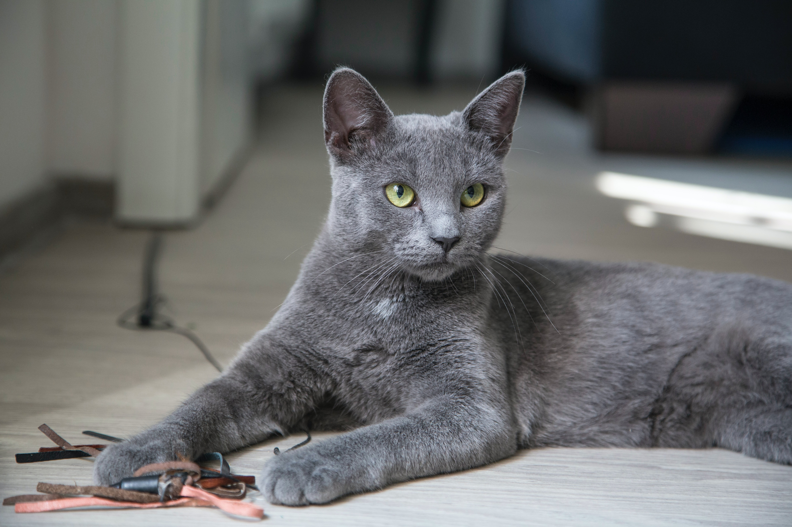

Os gatos são os animais de estimação mais populares de todo o mundo. Apesar de domesticados, os gatos partilham todas as características dos felinos selvagens dos quais são parentes: são fortes, ágeis, dotados de grandes reflexos, sentidos apurados e instinto de caça.
São brincalhões, curiosos e conseguem ser teimosos, mas são também extremamente amigáveis e afetivos: um dos gestos mais carinhosos dos gatos é a famoso "amassar pãozinho" e outro sinal de afeição é o não menos famoso ronronar.